Kisosaki, Mie: things to do, food and stays
Kisosaki · Mie
Kisosaki
Highlighted on the Mie map.
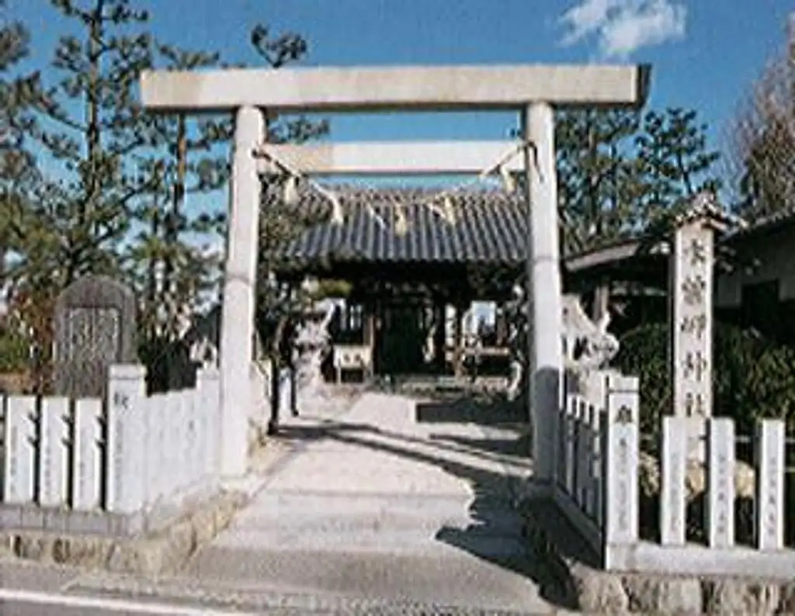
Stay
季の邸 鍋田川
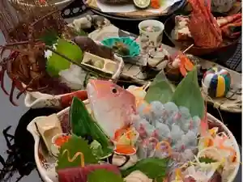
Ki No Tei Nabeta Kawa
Dining
木曽岬
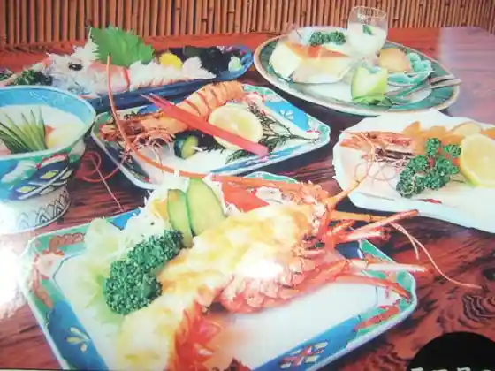
Kiso Misaki
Minami kitchen
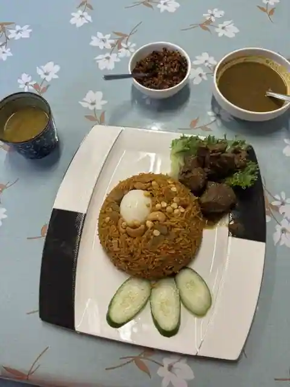
Minami kitchen
安らぎの温泉旅館庄助
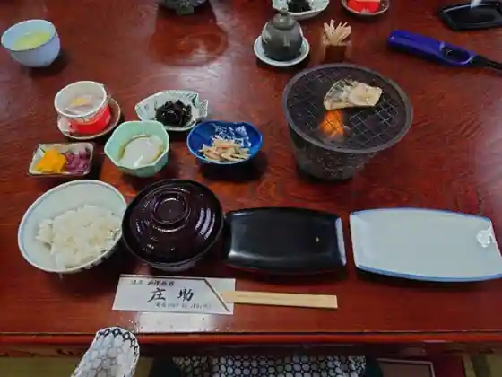
Yasura Gino Onsen Ryokan Shosuke
Cafe りんごジャム
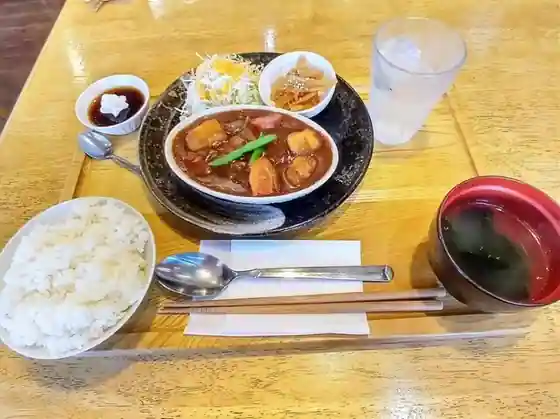
Cafe Ringo Jamu
おてらーめん
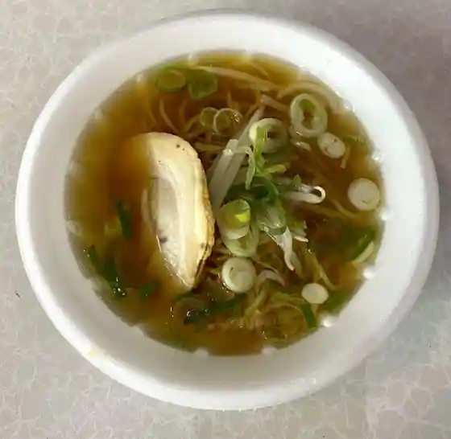
Ote Ramen
喫茶 栄
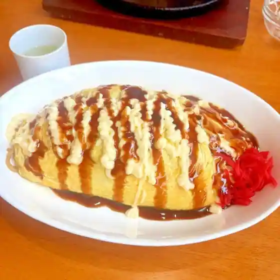
Kissa Sakae
ゆきちゃん
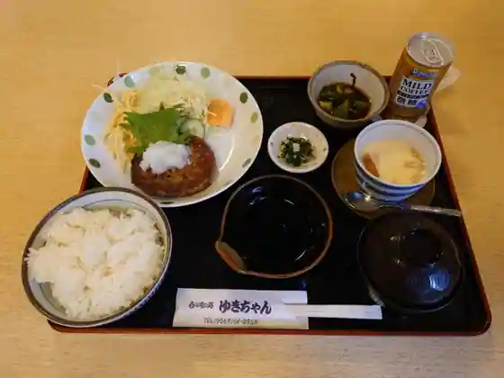
Yukichan
喫茶マイウェイ
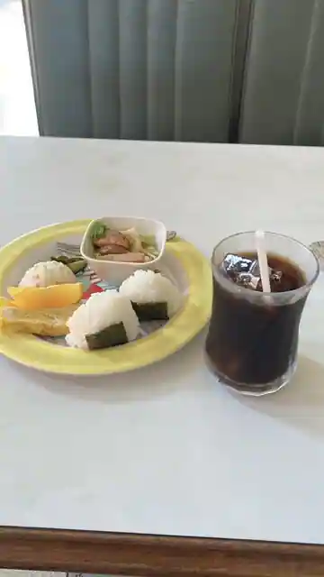
Kissa Maiuei
The Colombo
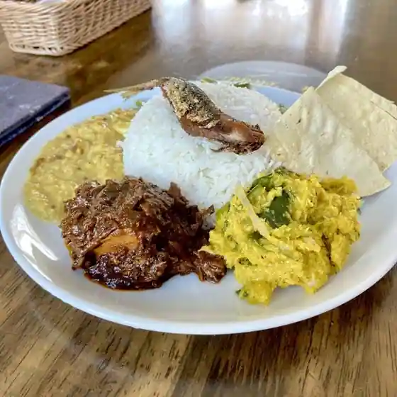
The Colombo
居酒屋 にしの
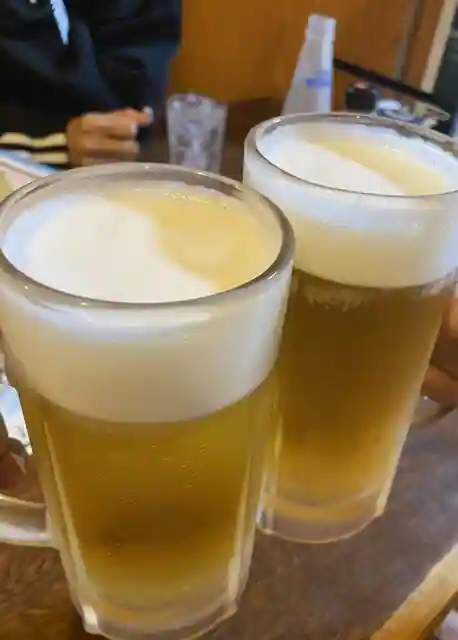
Izakaya Nishino
古民家カフェ 風のおと
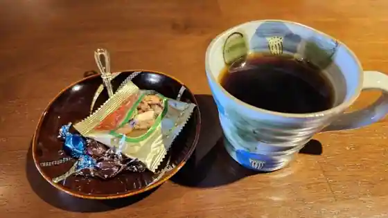
Ko Minka Cafe Kaze Noto
日乃出屋菓子店
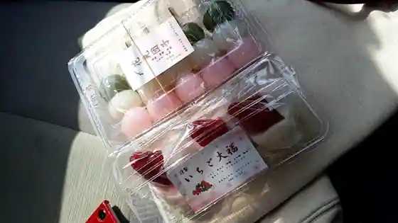
Nichi No Shutsu Ya Kashi
食楽酒場 飯場
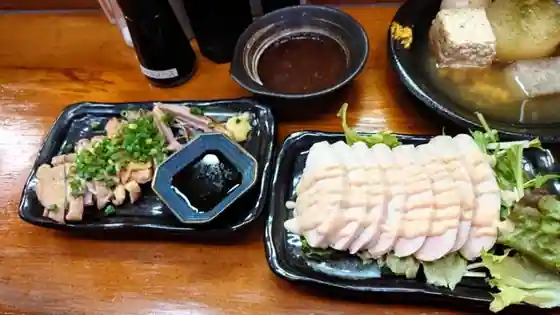
Shoku Rakushu Ba Hanba
セルフカフェ 木曽岬店
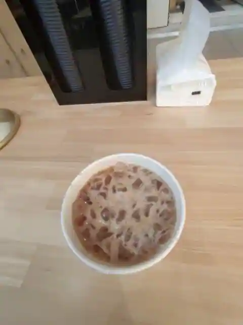
Serufu Cafe Kiso Misaki
ビジネスインNAGASHIMA
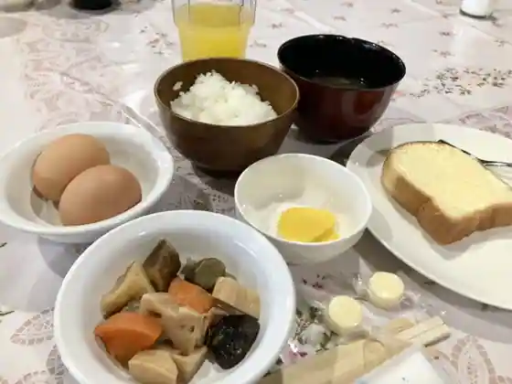
Business Inn NAGASHIMA
おこたまBASE
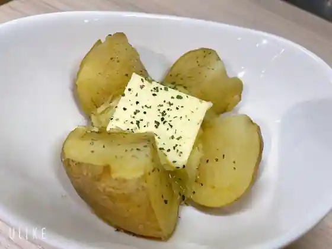
Okotama BASE
カラオケ喫茶・居酒屋 純
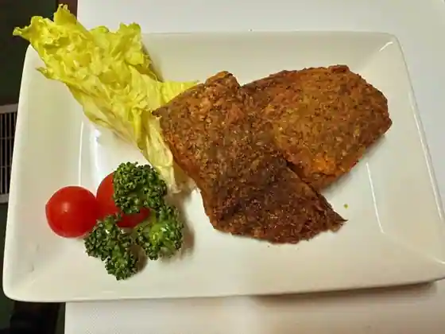
Karaoke Kissa Izakaya Jun
Sights
Nabeta Kawa Tsutsumi Sakura Namiki (Kaika Joho Mo Keisai)
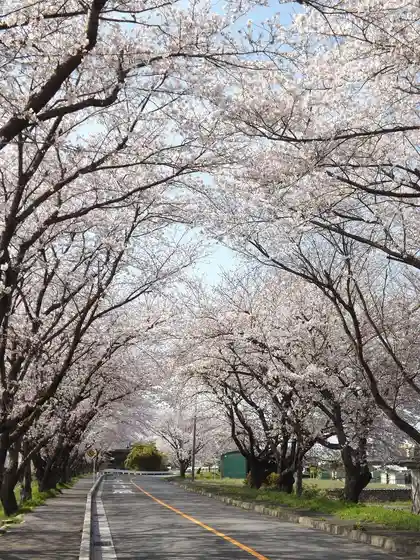
Kuramoto Farm
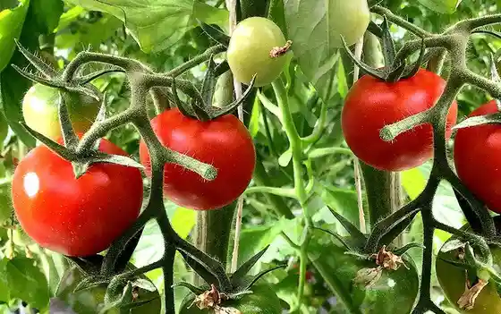
Kisosaki Tatebumi Ka Museum
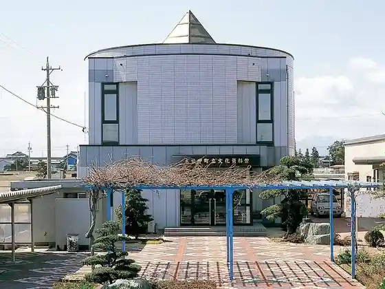
Kisosaki Shrine